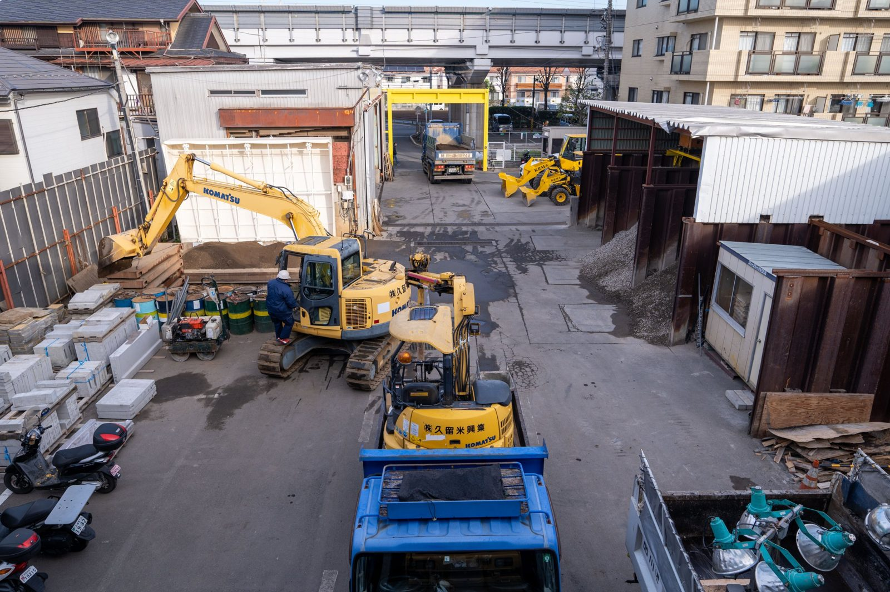
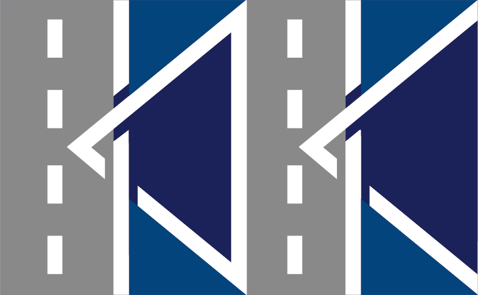
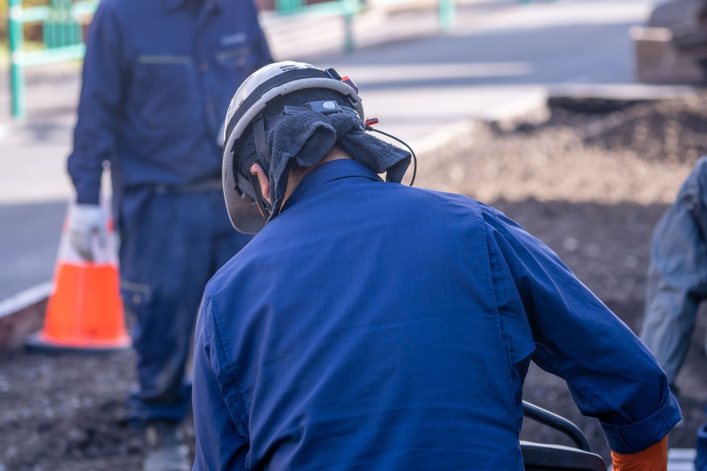
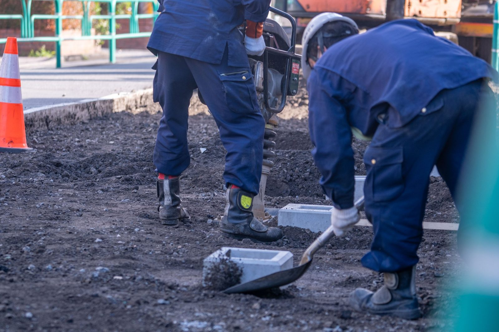
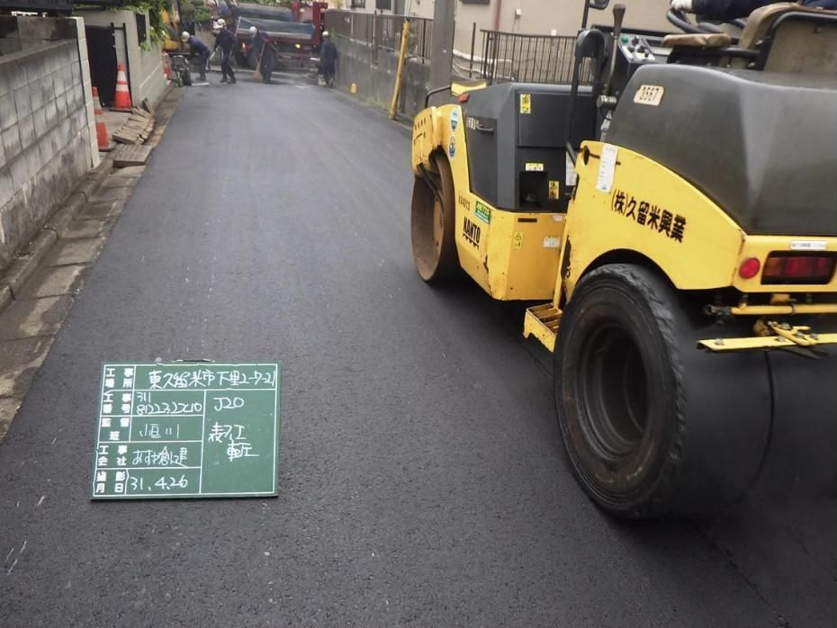
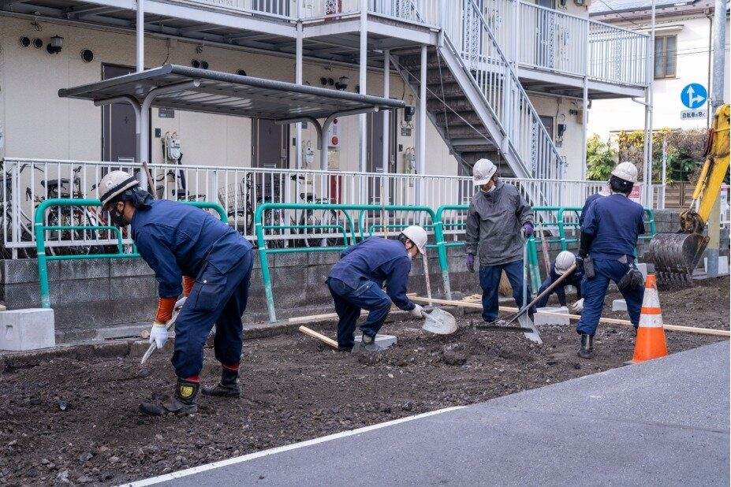

08:30本社に集合

北烏山の本社から、各現場へ。
現場職は本社に集合し、重機や資材を積んで、その日の現場へ向かいます。

KURUME KOGYO株式会社久留米興業
お問い合わせ
SETAGAYA, TOKYO
SINCE 1974
現場で道路と水道を守る仕事と、人を大切にする会社づくり。
歩道の工事を進める現場職
A DAY OF KURUME KOGYO
08:30本社に集合

現場職は本社に集合し、重機や資材を積んで、その日の現場へ向かいます。
AM現場で

班で役割を分け、安全を確かめながら作業を進めます。
AM本社で
営業は工事の相談を受け、見積や人・材料・日程を整えます。
PM現場で

締め固めて舗装を仕上げ、街の人が使える道路に戻します。
17:30一日の終わりに

決められた作業を終えて、現場を引き上げます。